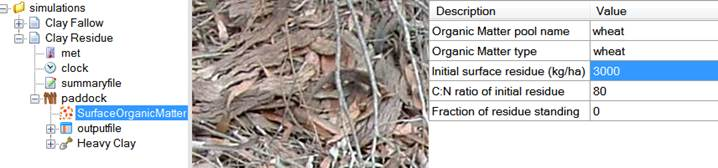
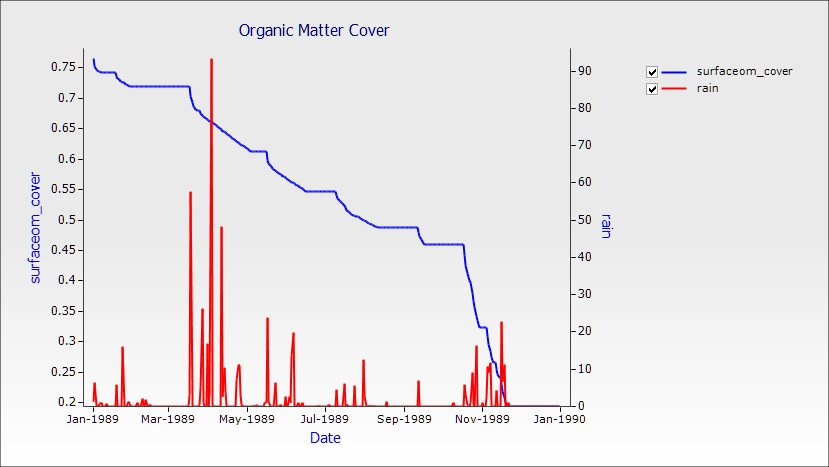
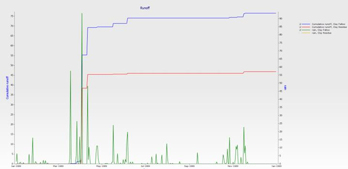
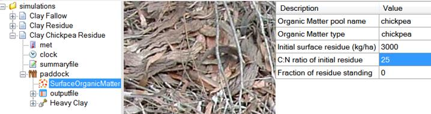
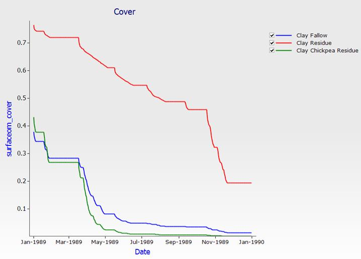

Exercise 2: The Effect of Residue Cover on Soil Water Storage During Fallow
Tracking the Decline of Cover as Residues Decompose.
APSIM simulates the influence of crop residues on the efficiency with which water is captured and retained during fallows. Residue cover declines as residues decompose.Residue decomposition is simulated in APSIM in response to weather, as well as the chemical composition of the residues. By doing this simulation you will reinforce skills learned in previous exercises and learn to do some basic editing of default values to "customise" your simulations.
This module assumes you have completed the previous module: Introduction to APSIM UI. It will introduce you to the Surface Organic Matter module and demonstrate how surface residue decomposes over time.
1. For this module we will use the simulation we created in module 1 as a base. There is also a completed example in the training toolbox if you would prefer to use that. Open the file Module1.apsim.
2. Save the file as Module2.apsim in the Core 2 –Surface Organic Matter folder. Remember to use “Save As” not “Save” or you will overwrite the old file.
3. Remove the “Sand Fallow” simulation. We’ll use “Clay Fallow” as the starting point. Remove the graph.
4. Make a copy of “Clay Fallow” by dragging it to the simulations node in the tree
5. Rename this new simulation to “Clay Residue”.
6. Expand the new simulation then expand the paddock node. Click the SurfaceOrganicMatter module and change the initial surface residue to 3000 kg/ha.

7. Run the simulations.
8. Create a graph of Date vs surface organic matter cover (surfaceom_cover) and rain (right hand axis) for the “Clay Residue” simulation. To do this, open the “outputfile” node and delete the two previous graphs then drag a new one in from the graphs toolbox. Change the name to Organic Matter Cover.

The Effect of Cover Decline on Runoff and Evaporation
We will compare the effect that ground cover has on runoff. Graph both output files with Date vs runoff (cumulative) and rain (right axis). Rename the graph to Runoff. If you only get one graph it means that one simulation has not been run yet. Click the simulations node then click Run to run them both.

The Effect of Residue Type on Speed of Decomposition
The APSIM residue model will decompose residues at differing rates according to the C:N ratio of the material. To demonstrate this we will reproduce the previous simulation but apply legume residues in the place of the wheat residues.
1. Create another copy of the “Clay Residue” simulation. Rename it to “Clay Chickpea Residue”. Remove the graph component.
2. Change the residue parameters to 3000 kg/ha of Chickpea residue. Also change the organic matter pool name to “Chickpea”.
3. Change the C:N ratio to 25.

4. Run the new simulation.
5. Graph all three residue simulations with residue cover as a function of time. Call the graph “Cover”.
